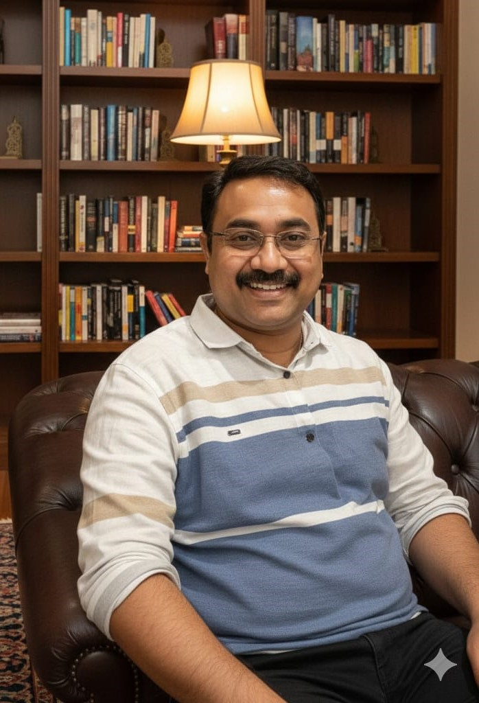

Dr. Rahmat Kanchagar is a Senior Journalist, Media Strategist, Digital Creator, and Founder of IK
Studios, with more than 25 years of continuous, ground-level experience in Indian electronic media.
Known for his courage, clarity, and commitment to people’s issues, he has built a distinguished
reputation as one of Karnataka’s most impactful field journalists.
Rahmat began his media journey in 2003 with ETV Kannada from the Belgaum region. His strong
storytelling ability, grassroots reporting style, and deep understanding of social issues quickly
positioned him as a powerful voice in regional journalism. In 2006, he joined TV9 Kannada, where he
dedicated more than 15 years, rising to the role of Bureau Chief and Senior Journalist across
Belgaum, Bengaluru, and Hyderabad.
During his extensive career, Rahmat has covered hundreds of hard-hitting stories that brought real
change. His investigative reports on floods, droughts, corruption, rural distress, and government
accountability have influenced public policy and exposed issues that often remained hidden. His
impactful field reporting has earned him numerous awards and recognition from civic organisations,
media houses, and public institutions and so many Veerashaiva as well as viratka and matts across
the country.
Mr Rahmat kanchagar is Known for his high adaptability, leadership qualities, strong work ethic, and
exceptional communication skills, Rahmat has inspired many young journalists through his mentorship
and newsroom leadership. He is fluent in Kannada, Hindi, English, Telugu, Marathi, and conversant in
Tamil, allowing him to operate across diverse linguistic regions.
Rahmat holds a Ph.D. in Journalism and Broadcast Media and a Master’s degree in Journalism,
strengthening both his academic and professional authority. His expertise spans news reporting,
editorial strategy, content planning, digital storytelling, public communication, and emerging media
technologies.
In 2025, expanding his vision beyond conventional journalism, Rahmat launched IK Studios — a
Bengaluru-based multilingual media and digital ecosystem under the “IK” brand.
Through his personal website www.iamkanchagar.com and pulsedaily.com Rahmat continues to publish
stories, opinions, documentaries, and digital-first content.
With a rare blend of experience, innovation, and cultural insight, Dr. Rahmat Kanchagar stands today
as a powerful voice in regional journalism and a visionary shaping the future of digital media in
Karnataka and beyond.
